組み立て
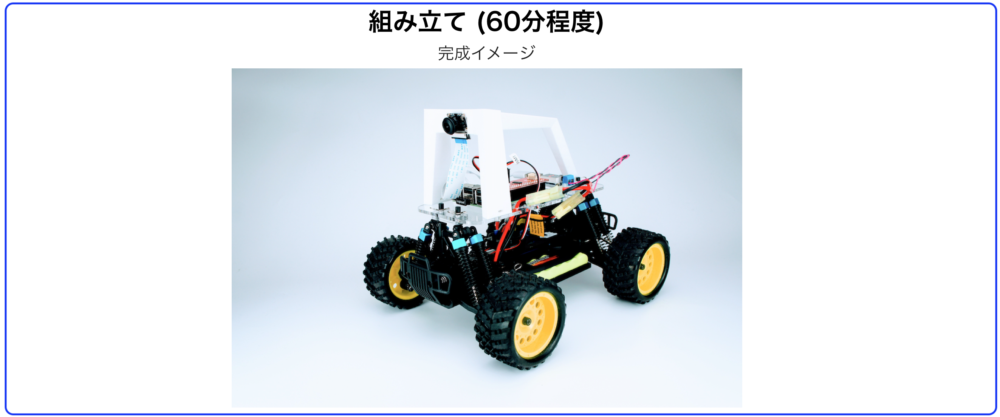
Donkey Carのパーツ一覧
| 項目 | 内容 | 商品 |
|---|---|---|
| 0 | HSP 94186 | FaBo Store |
| 1 | Raspberry Pi3 B+ | RS Component |
| 2 | PiCamera | FaBo Store |
| 3 | 充電機(PSEマーク付き) | FaBo Store |
| 4 | コネクタ | FaBo Store |
| 5 | USBケーブル | FaBo Store |
| 6 | SD Card(32GB) | FaBo Store |
| 7 | Donkeyアクリル | FaBo Store |
| 8 | 降圧用基板 | FaBo Store |
| 9 | 制御基板 | FaBo Store |
| 10 | 充電用変換コネクタ | FaBo Store |
| 11 | Donkeyアーム | FaBo Store |
| 12 | 降圧用スペーサーアクリル | FaBo Store |
| 13 | ポリカネジ | FaBo Store |
| 14 | カメラ固定ネジ | FaBo Store |
| 15 | フレーム固定ネジ | FaBo Store |
| 16 | Raspberry Pi固定ネジ | FaBo Store |
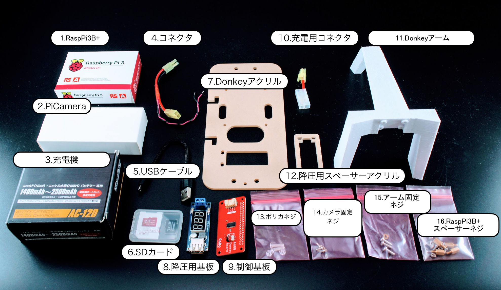
Donkey Car組み立て
0.車体の説明
ラジコンのボディーを外し、2本のPWMの線を、プロポ受信機から取り外します。

車体のESCとサーボからでている線とスイッチの位置を確認します。

注意点
HSP 94186のプロポとプロポ受信機は、国内の技術基準適合証明(技適)を取得していません。国内では、プロポを使用しないでください。
1.DonkeyCarプレートにRaspberry Piを固定するネジを取り付ける。
| 画像 | 仕様するパーツ | 個数 |
|---|---|---|
| 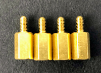 | M2.6スペーサーネジ | ４ |
| M2.6ナット | 4 | |
| Donkeyプレート | 1 |
スペーサーを差し込み、裏からナットで固定します。


ナットの締め方
走行中にナットが緩んでくる可能性がありますので、強めに締めます。
2. Raspberry Piを取り付ける
| 画像 | 項目 | 個数 |
|---|---|---|
| 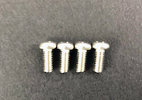 | M2.6ネジ | ４ |
| Raspberry Pi3+ |
ラジコンに乗せて、前後左右の方向が間違っていないか確認し、Raspberry Pi3B+を固定します。
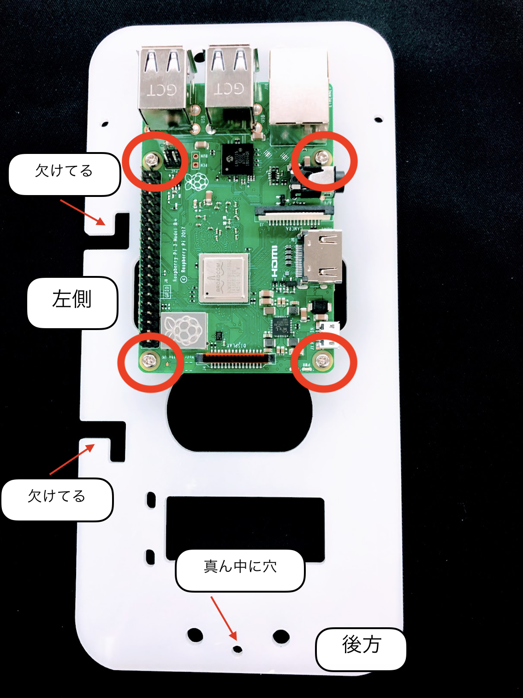
ナットの締め方
左側の2つの欠けている部分は、バッテリーの線を引っ掛ける部分になります。2つの欠けている部分はバッテリーサイドに来る必要があります。
3. 降圧型変換器内蔵電圧計を取り付ける。
| 画像 | 項目 | 個数 |
|---|---|---|
| 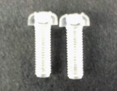 | M3ポリカネジ | 2 |
| 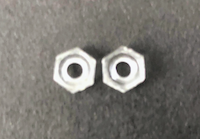 | M3ポリカナット | 2 |
| アクリルスペーサー | 1 |
間にスペーサーを入れて固定します（２箇所）。


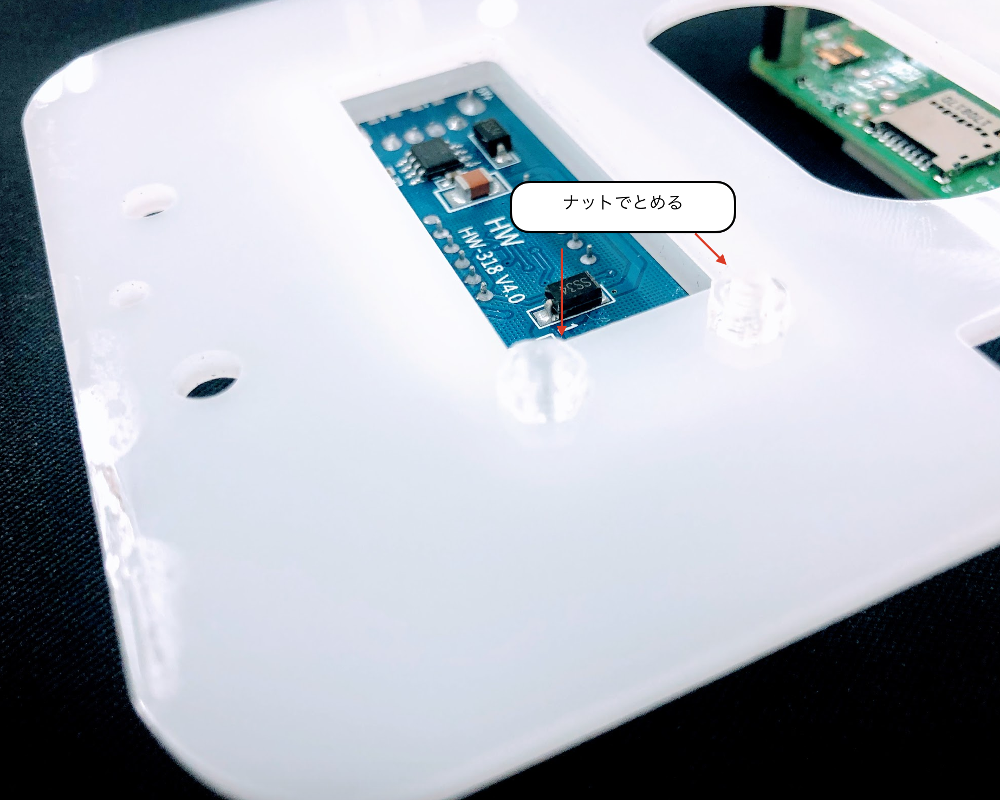
4. USB Cableを接続
| 画像 | 項目 | 個数 |
|---|---|---|
| USB Cable | 1 |
USB CableをRaspberry Pi3と降圧基板の間で接続します。

5. 電源コネクタの取り付け
| 画像 | 項目 | 個数 |
|---|---|---|
| 電源コネクタ | 1 |
電源用のコネクタを昇圧基板に取り付けます。+と-を絶対に間違えないようにしてください。

注意点
電源ケーブルの+と-を間違わないようにしてください。また、バッテリー装着時に、被膜がついていない部分をくっつけるとショートしますので、取扱には細心の注意をはらってください。
6. Donkeyアームを取り付ける
| 画像 | 項目 | 個数 |
|---|---|---|
| Donkeyアーム | 1 | |
| 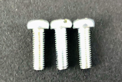 | M3ネジ | 3 |
| 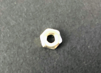 | M3ナット | 1 |


7. PiCameraを取り付ける
| 画像 | 項目 | 個数 |
|---|---|---|
| PiCamera | 1 | |
| M2 x 8mm | 4 |
PiCameraを取り付けます。


ケーブルには、向きがあるので、向きを間違わないようにします。ケーブルはクロスする感じで問題ありません。

右側には、部品との接触を防ぐために、絶縁スペーサーを装着します。

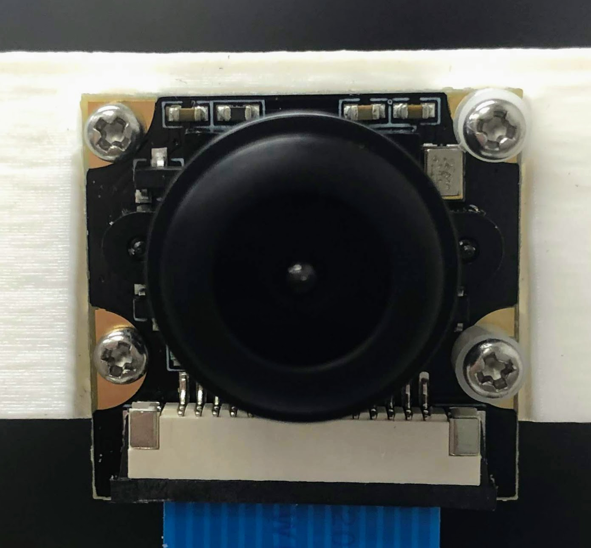
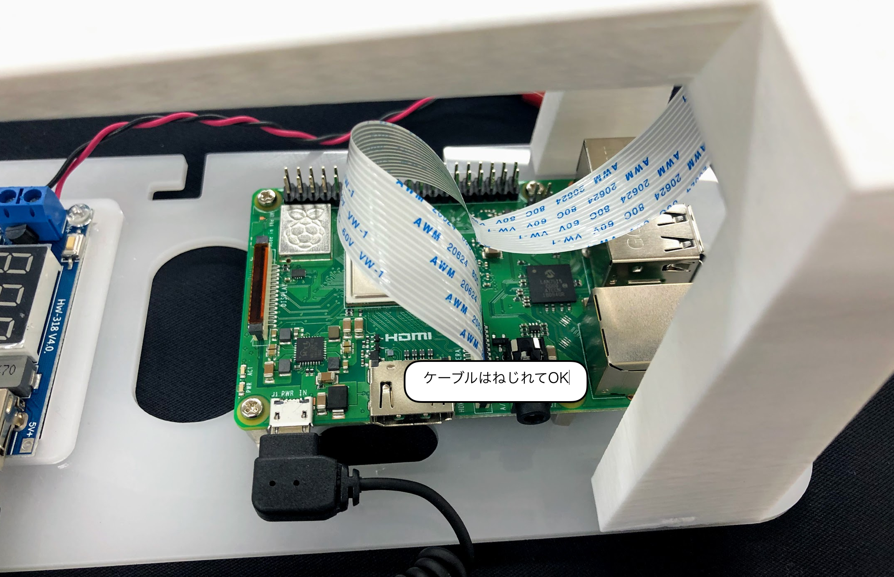
Cameraのケーブル
Cameraのケーブルの挿入する向きを間違えるとRaspberry Pi3でPiCameraが認識できません。また、差し込みが甘い場合も同様に認識に失敗するので、再度差し込みなおします。
8. プレートをRCカー本体に固定する。
| 画像 | 項目 | 個数 |
|---|---|---|
| 固定ピン | 4 |
４箇所のボディマウントエクステンションに固定ピンを取り付ける。
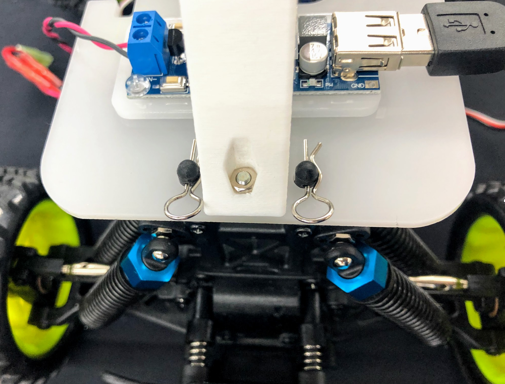
9. PWMシールドを装着する
| 画像 | 項目 | 個数 |
|---|---|---|
| コントローラーボード | 1 |
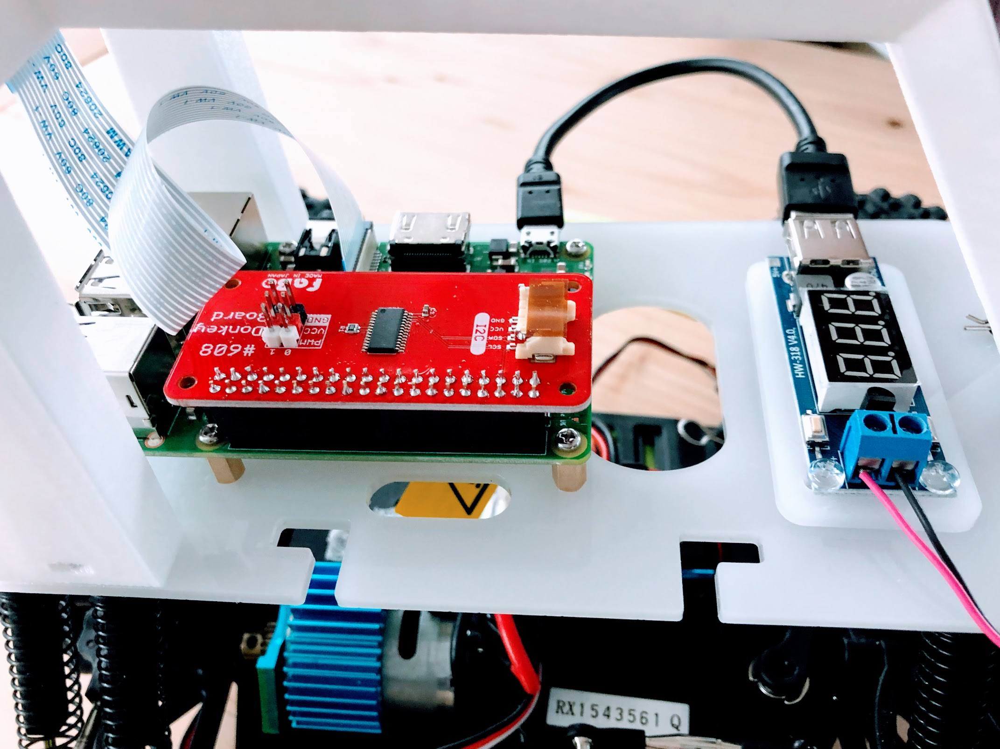

10. バッテリーの接続